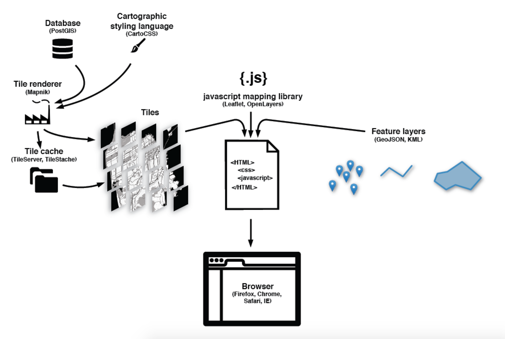
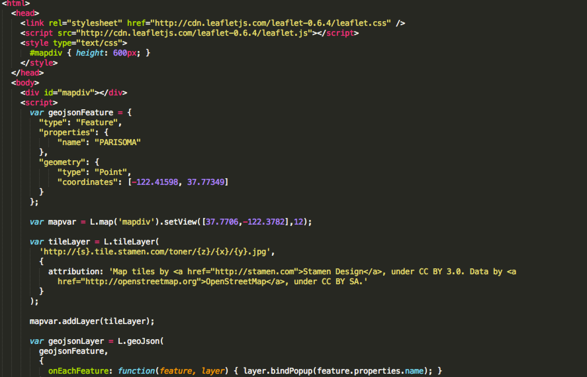
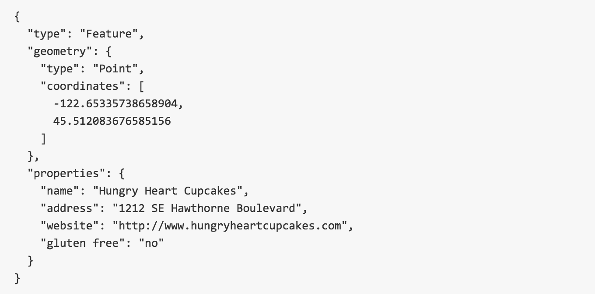

maptime
Learn GeoJSON (and build cool collaborative datasets!)
GeoJSON
git
GitHub
geojson.io
leaflet
goal: build an awesome, collaborative map using open source tools
this tutorial is modified from
github.com/
lyzidiamond/
learn-geojson
this is: a way to learn about GeoJSON, git, and GitHub in an easy, accessible way
is not: a git tutorial or an overview of how to use git in the command line.
this is: a collaboration technique for building crowd-sourced geographic datasets.
but it is not: scalable or comprehensive
Let's start from the very beginning; if you're an intermediate or advanced user, hold tight
review: Anatomy of a Webmap

maptime.io/
anatomy-of-a-web-map/
review: leaflet.js

Background Knowledge
What is GeoJSON?
GeoJSON is an open and popular geographic data format commonly used in web applications
It is an extension of a format called JSON, which stands for JavaScript Object Notation
adds a section called "geometry" to define coordinates for your data layers (point, line, polygon, multi-polygon, etc)
Lets take a look inside:

geographic information
descriptive information
where
what
What are git and GitHub?
git: allows multiple people to work on the same files at the same time without overwriting each other’s changes
version control
In order for multiple people to work on a project, the data has to live in a place where multiple people can access it: GitHub
So what is geojson.io?
Using some of the great tools available via MapBox.js, Leaflet, and some internal GitHub functionality, Tom MacWright created geojson.io
allows users to easily edit and create geographic data in the browser
point and click
Awesome. Let's get started.
First of all, you need to make yourself a GitHub account
I would also advise downloading git
direct your browser to this repo: github.com/emilyashley/maptimenola-geojson